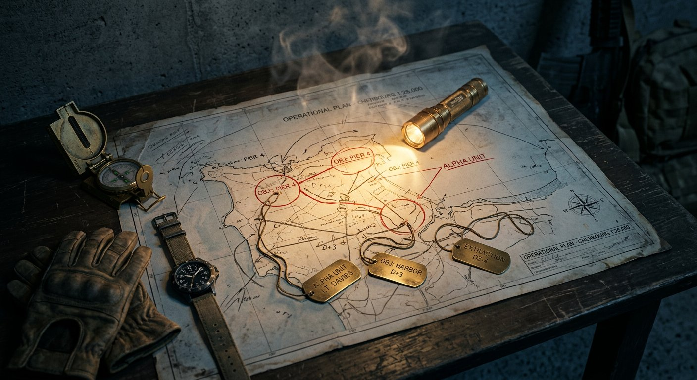

Tout le manuel, page par page. Si tu cherches un sujet précis, la recherche en haut de page couvre la page courante ; cet index couvre l’ensemble.
Le menu contient tout, le plan explique tout
Le bouton « Toutes les pages », en haut de chaque page, ouvre un panneau qui liste les trente et une pages, groupées par usage : démarrer, terrain, combattre, ressources, base de données, repères. Chaque entrée porte sa phrase de description, donc on choisit sans ouvrir. Trois raccourcis restent visibles en permanence — le mémo, la base de données et la saison — parce que ce sont les trois pages qu’on rouvre le plus souvent.
Cette page-ci sert à autre chose : elle donne l’ordre de lecture, ce que chaque page contient en détail, et les mots-clés pour retrouver un sujet précis. Si tu cherches une page, le menu suffit. Si tu cherches une information, le plan est plus rapide que de parcourir le menu.
Base de données des objets
Munitions et armures : les sept niveaux de pénétration, ce que chacun traverse, et quelles balles choisir par palier.
Quel butin prendre : classement par valeur réelle, calculé sur les 1 008 fiches — ce qui remplit un sac, ce qui le vide, le seuil de décision.
Vue d’ensemble : 1 008 fiches, comment lire une fiche et ce que les valeurs ne sont pas.
Les 50 armes : fusils d’assaut, précision, mitrailleuses, pistolets, pompes.
Les 71 munitions : niveau de pénétration, poids, valeur, taille de pile.
Débuter en Operations — la boucle de jeu, ce qu’on perd en mourant, l’équipement des premières parties, les soins, la checklist des dix premières heures.
Progression et gestion de compte — missions de département, site noir et son ordre d’intérêt, cache et valeur par case, tickets d’équipement, passage en difficulté normale.
Économie d’un raid — estimateur de rentabilité, comparaison marchand et hôtel des ventes, ce que les vieux chiffres ne disent plus, coffre sécurisé.
Terrain et sorties
Cartes et routes types — schémas de rotation par carte, ce qui a bougé sur Brakkesh 2.0, particularités de Zero Dam, Space City et Zenith Port.
Conditions de sortie — planificateur interactif, six familles de contrainte (poids, sac, paiement, levier, délai, aléatoire), cas de Brakkesh.
Warfare — diagnostic de rôle, véhicules, hélicoptères et cibles marquées, trois erreurs à corriger.
Modes et cartes de la saison
Détonation 5v5 — une vie par manche, économie d’Alloy, opérateur unique, rôles utiles, cartes Transit et Shariq Manor, ajustements du correctif.
Zenith Port — Riptide, deux phases, attaque et défense, Martelo sur les toits, bombe thermobarique.
Réglages, mobile et sécurité : commandes, disposition du HUD, image et son, Secure Boot et TPM 2.0, erreurs de débutant classées par coût, et ce qui fait réellement bannir un compte.
Space City et Polaris Patrol — repères de la carte, trois sorties, carburant de fusée et antenne, règles du mini-mode.
Saison et ressources
Saison Aurora — correctif du 12 novembre, calendrier des échéances, routine de session, codes de rédemption.
Briefings audio — huit mémos en français, entre trente secondes et une minute.
Mémo du jeu : la synthèse d’une page — cinq règles, le tableau de pénétration, la valeur par case, les dates qui se referment et neuf erreurs à éviter.
Conseils de joueurs francophones : ce que retiennent ZayRek, Ouroune et KAZ après avoir documenté leurs débuts (équipement de départ, missions, site noir, discipline sonore, Warfare d’abord).
Sources — 47 blocs de références datées, avec les pages consultées.
Comment lire ce manuel
Trente pages, mais rarement plus de trois à la suite. Chaque page commence par un encadré qui indique à quel moment elle sert : avant la première partie, entre deux raids, ou en pleine session quand une décision ne peut pas attendre.
Avant de jouer
Débuter, Progression, Réglages. Ce qui se règle une fois : le kit, les commandes, l’ordre des améliorations.
Pendant un raid
Sorties, Cartes, Munitions, Butin. Ce qui se décide en trente secondes : par où sortir, quelle balle charger, quoi ramasser.
Après la session
Économie, Base de données, Saison. Ce qui se calcule à froid : ce que le raid a rapporté, ce qui expire cette semaine.
Trois niveaux de confiance sont signalés partout de la même façon. Ce qui vient des notes officielles est daté et présenté comme officiel. Ce qui vient de mesures de joueurs est daté et présenté comme une observation. Ce qui circule sans preuve est écarté, et la page Sources dit pourquoi quand c’est utile. Aucune page ne prétend détenir un classement définitif : un classement dépend d’un mode, d’une date et d’une taille d’équipe.

Un plan qui tient sur une page fait gagner plus de raids qu’un plan qui tient dans la tête.
Sujets traités, par mot-clé
AN-94 · AKM (nerf du 12 novembre) · AR-57 (pénétration 32) · MCX LT (audible à 350 m) · M7 · K437 · Thompson (tête à 1,6) · PKM Bullpup · SR-25 HVK · M250 Monolith · arc composite (16 flèches) — tous sur la page Arsenal et la page Saison.
Martelo, Ariete, Smoke Halo, Guerreira · Rover et Clover · N-Two et Cryo-Flask · Nox et Revenant · Shepherd · D-Wolf — page Opérateurs.
Brakkesh 2.0, factions Haavk et Ahsarah, insigne de faction, chasses d’escouade, salle de contrôle · Zero Dam, sommet du barrage, rivière · Space City, Black Chamber, Buoyancy Lab, Centrifuge, Test Range · AZ3, Supercritical · Layali Grove, rivières et bateau · Transit et Shariq Manor en Détonation — pages Cartes, Sorties et les pages de mode.
Alloy · Tekniq · coffre sécurisé · plans de chargement · tickets d’équipement · site noir · cache · pêche et Bazar — pages Économie, Progression et Saison.